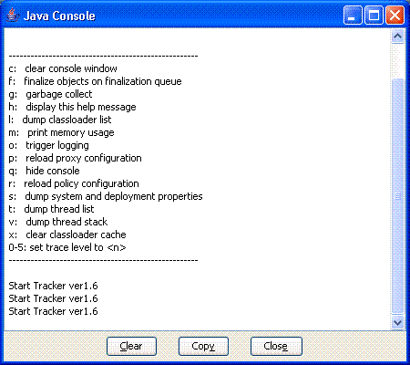

|
|
Java 콘솔 |
Java 콘솔에는 다음의 내용이 모두 포함됩니다.
Java 콘솔은,System.out 및 System.err 를 모두 콘솔 윈도우에 리다이렉트(redirect) 하는 디버그용의 단순한 툴입니다. Java Plug-in 로 동작하는 애플릿이나, Java Web Start 로 동작하는 어플리케이션으로 이용할 수 있습니다.
Java 콘솔에서는, 애플릿이나 어플리케이션의 디버그가 용이하게 실행할 수 있도록(듯이) 다음에 나타내는 다양한 옵션이 제공되고 있습니다.

액션/옵션은, Java 콘솔 윈도우가 포커스를 가지고 있는 동안에 해당의 영문자/숫자를 입력하는 것에 의해 선택합니다.
|
키
|
설명
|
| c: | Java 콘솔 윈도우를 클리어 합니다. |
| f: | finalize큐내의 객체의 finalize를 트리거하고 나서, 메모리 정보를 표시합니다. Memory 는, JRE 가 사용하는 현재의 heap 사이즈를 나타냅니다. Free 는, heap내에서 사용하고 있지 않는 사용 가능한 메모리입니다. 퍼센트 (xx%) 는, 전heap 사이즈에 차지하는 빈기억 영역의 비율입니다. |
| g: | 가베지 컬렉션을 트리거해, 상기와 같은 메모리 정보를 표시합니다. |
| h: | 여기서 설명하고 있는 것과 같은 헬프 메세지를 표시합니다. |
| l: | Java Plug-in 의 캐쉬된 ClassLoader 객체의 리스트를 표시합니다 (이러한 객체는, 디스크는 아니고 반도체 메모리에 캐쉬된 런타임 객체입니다. 「애플릿 캐쉬」 로 설명하는 캐쉬된 JAR 파일과는 다른 것에 유의해 주세요). 클래스는 캐쉬되기 (위해)때문에, 이전에 표시한 페이지에 돌아올 때에도, 페이지를 재차 로드할 필요는 없습니다. 최초로 페이지를 표시했을 때에,ClassLoader 객체가 작성되어 다운로드되는 클래스 모든 것이 그 객체에 캐쉬됩니다. 이러한 객체는, 그 codebase 에 따라 작성되어 캐쉬됩니다. ClassLoader 객체를 식별하기 위해(때문에), "클래스 로더 리스트 " 에 해당의 객체의 codebase 가 표시됩니다. ClassLoader 객체와 함께 표시되는 추가 정보에는,zombie,cache, 및 info 가 포함됩니다. zombie = true 는 ClassLoader 객체가 사용중이 아닌 (애플릿이 현재 페이지에 로드되어 있지 않다) 것을 나타냅니다. cache = true 는 애플릿이 캐쉬되는 것을 나타내,false 는 페이지를 그대로 해 두면(자) 애플릿이 파기되는 것을 나타냅니다. info 는 디버그에 사용되는 값입니다. |
| m: | 상기와 같이, 히프메모리의 사용율을 표시합니다. |
| o: | 로그 기능을 트리거해, Java Plug-in 콘솔로부터 로그 파일에의 출력을 지시합니다. |
| p: | 프록시 구성을 재로드합니다. |
| q: | Java 콘솔을 메인 화면으로부터 지웁니다. |
| r: | 정책 구성을 재로드합니다. |
| s: | 시스템 프로퍼티을 출력합니다. 이것은, 주로 디버그에 사용합니다. |
| t: | 기존의 thread 그룹을 모두 출력합니다. 최초로 나타나는 그룹은 Group main 입니다. ac 는 active count 의 약어로, thread 그룹과 그 아이 thread 그룹내의 액티브한 thread의 총수입니다. agc 는 active group count 의 약어로, thread 그룹의 액티브한 아이 thread 그룹의 수입니다. pri 는 priority 의 약어로, thread 그룹의 우선 순위입니다. Group main 의 다음에, 다른 thread 그룹이 Group <name> 라고 하는 형식에서 표시됩니다. 여기서 name 는, 애플릿과 관련하는 URL 입니다. thread의 각 리스트에는, thread명, thread의 우선 순위가 나타납니다. 또, thread가 실행중의 경우에는 active, thread가 파기의 처리중의 경우에는 destroyed 라고 표시되어 thread가 demon thread의 경우에는 daemon 라고 표시됩니다. |
| x: |
캐쉬내의 모든 미리 Java 콘솔에 「x」라고 입력해, 클래스 로더 캐쉬를 클리어 해 두면(자), 애플릿이 포함되어 있는 페이지를 재표시하는지, 그 페이지에 다시 돌아왔을 때에, 변경된 JAR 파일이 서버로부터 다운로드됩니다. |
| 0-5: | 다음의 섹션의「트레이스 및 로그」로 설명하도록(듯이), 트레이스 레벨의 옵션을 설정합니다. |
Java Plug-in 의 실행중에, Windows 에서는 태스크바에, Solaris 에서는 데스크탑에 아이콘이 표시됩니다. 오른쪽 클릭하면(자) 메뉴 옵션이 표시되어[Open/Hide the Java Console] 를 선택할 수 있습니다. 이것에 의해 사용자는, 같은 브라우저 세션내에서 몇 번이라도 Java 콘솔을 열거나 숨기거나 할 수가 있습니다.
Java 콘솔은, Java 컨트롤 패널의 [상세] 탭에서의 구성에 따라, 기동시에 표시하거나 비표시로 하거나 기동하지 않거나 하는 것이 가능합니다.